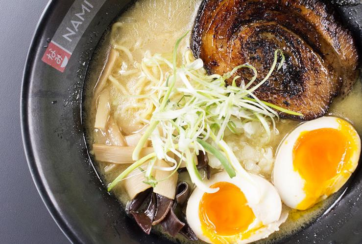
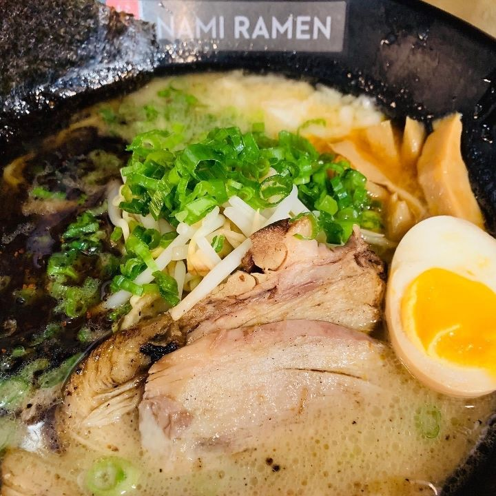

46 N Central Ave Clayton, MO 63105
Sunday - Thursday / 11am - 9pm
Friday - Saturday / 11am - 10pm
(314) 833-6264
Order online at NAMIRAMEN.COM

Hiyayakko (cold tofu)
6.99
Japanese style chilled tofu appetizer, silky and soft tofu with a refreshing ponzu sauce topped with chopped cucumbers, fried crispy garlic, scallions and toasted sesame seed.
Agedashi Tofu
8.99
Crispy fired soft tofu served with bonito flakes, chopped scallions in Tsuyu broth.
Shumai (6)
7.99
Steamed dumpling with Shrimp.
Bao
4.00 each
Steamed buns served with choice of protein with lettuce, green onions and cucumbers.
Choose Your Filling:
Braised Pork Belly
Curry Chicken
Tempura Shrimp
Kale Salad
9.50
Chopped Kale with chopped cucumbers, Chopped Tomatoes, Dried Raspberry, crispy ramen noodles - Served with cilantro lime viaigrette.
Octopus Salad
10.50
Octopus tossed with shredded seaweed, mixed greens, tomatoes & toasted sesame seeds. With creamy ginger dressing.
Seasonal Salad
8.00
Mixed greens with cucumbers, tomatoes, & crispy ramen noodles - with creamy ginger dressing.
Honey Miso Glazed Salmon Salad
16.00
Grilled Salmon with Fresh Mix greens, chopped cucumbers, chopped Tomatoes tossed in a Japanese creamy toasted sesame dressings.
All ramen bowls come with soft boiled eggs, chopped green onions and nori.

Nami Signature Tonkotsu
14.50
A 24-hour creamy pork broth, seasones with shio tare.
Ingredients: braised tender pork / minced onion / woodear mushroom / bamboo shoots (menma)
Roasted Black Garlic Tonkotsu
15.00
Flavored with bold and robust roasted black garlic oil.
Ingredients: braised tender pork / roasted black garlic oil / minced onion / bamboo shoot (menma) / bean sprouts
Rise & Shine Ramen
16.00
Inspired by breakfast. Good anytime.
Ingredients: smoked thick-cut bacon / minced onion / bean sprouts / butter / chopped kale / black pepper
Ebi Ten Ramen (Tempura)
16.00
Tempura or Ramen? Have both together!
Ingredients: jumbo fried tempura shrimp, / beansprouts / crispy fried onions
Jigoku Ramen
15.00
Exploding with flavor, broth of red miso and chili.
Ingredients: spicy minced pork / crispy noodles / minced onion / ito togarashi / lemon zest
Curry Laksa
15.00
A broth of curried coconut milk, chicken & shrimp.
Ingredients: shredded curry chicken / shrimp / tofu /bean sprouts / cilantro
Veggie Ramen
13.50
Fresh vegetables packed with umami flavor.
Ingredients: tofu skin / roasted tomato / spinach / daikon sprouts / woodear mushroom / brussels sprouts / edamame / curry laksa / green onion oil
Gyuniku Ramen (Braised Beef Ramen)
15.00
Slow cooked sirloin in classic tonkotsu broth with a chili bomb.
Ingredients: sirloin tip / soft boiled eggs / bambooshoots (menma) / white onion / crispy fried onions / chopped green onions
Chicken Katsu Ramen
15.00
Succulent crispy japanese style fried chicken cutlet with our flavorful signature Tonkotsu broth.
Ingredients: fried chicken cutlet / minced onion /woodear mushrooms
Grilled Chicken Ramen
15.00
Tender grill chicken with our flavorful signature tonkotsu broth.
Ingredients: grill chicken / minced onions/ woodear mushrooms

Lemongrass Chicken Yakisoba
13.00
A modern take on the classic, tangy sweet and savory lemongrass sauce tossed with Yakisoba noodles.
Ingredients: lemon grass sauce / chicken / cripsy fried kale / butter & garlic mushroom
Show me, Shoyu Ramen
14.50
Our take on the Japanese classic, with a shoyu tare based broth.
Ingredients: tender Braised Pork / bean sprouts / bamboo shoots (Menma)
Volcano Ramen
14.10
Hot and Spicy Full Bodied Vegetable Ramen.
Ingredients: roasted tomatoes / steamed soft tofu / shredded cabbage / bean sprouts / green onions / sautéed shallots oil / seasoned soft boiled egg
Sapporo Miso Ramen
16.00
Soybean paste sauteed with ginger & garlic then mixed with a rich & creamy pork & chicken broth, packed with umami flavor.
Ingredients: jumbo scallops / roasted chashu pork / creamy buttered corn / shredded cabbage / bean sprouts / green onions / seasoned half boiled egg
Fried Rice
Delicious fried rice mixed with scrambled eggs, green onions and fresh vegetables with your choice of protein.
Chicken 11.00,
Shrimp 12.50,
Veg 12.50
Signature Rice Plate
A sunny side up fried egg, Mix green salad with house dressings, pickled veg, Nami sauce compliment white rice and your choice of protein.
Chicken Tatsu (Crispy or Grilled) 12.00
Teriyaki Chicken 12.20
Teriyaki Beef 13.00
Chasu (Braised Pork) 12.00
Tempura Shrimp 14.00
Honey Miso Glazed Salmon 16.50
Comes with a Soft Drink.
Little Ninja Ramen
7.99
Ramen noodles with creamy Tonkotsu broth
Ingredients: Braised Pork or Chicken Katsu / Soft Boil Eggs / Nori (Seaweed)
Little Ninja White Rice Bowl
7.80
White rice with a perfectly fried egg & Nami sauce
Ingredients: Braised pork or Chicken Katsu / Fried egg / Nami sauce
Soft Drinks / Hot Tea / Ice Tea / Assorted Japanese Bottled Drinks / Beer / Cold Sake / Wine